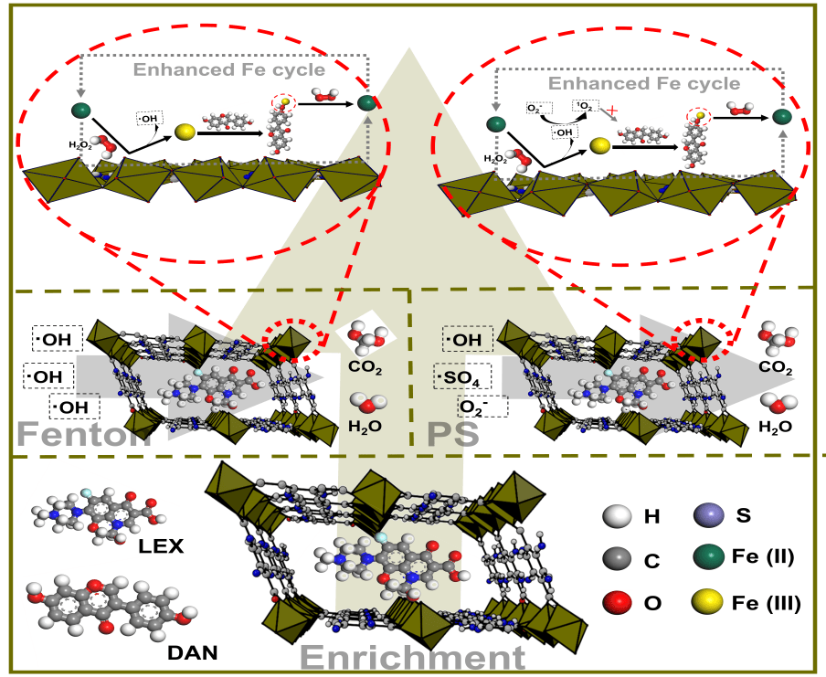

Research Details
Our college scholars have achieved new progress in the multifunctional nanomaterials of adsorption/degradation of antibacterial drugs in the environment and their mechanisms
Recently, our college scholars explored a multifunctional catalyst with high adsorption property and hydrogen peroxide/persulfate activation properties for fluoroquinolones (FQs) prepared by using daidzein as a template based on molecular imprinting technology combined with Fe-MOF, and systematically analyzed the efficient degradation mechanism of the catalyst based on different oxidation systems for FQs in water environment. The relevant results were published as "Imprinting defective Fe-based metal-organic frameworks as an excellent platform for selective Fenton/persulfate. degradation of LEX: removal performance and mechanism, " in Applied Catalysis B: Environmental.
The incomplete absorption and metabolism of antimicrobials in livestock and poultry leads to a large number of antimicrobials being discharged into the environment with feces and urine in prototype form, which poses a great threat to the ecological environment and human health. Therefore, the emergence of antibacterial agents as a new organic pollutant in natural water environment has attracted great attention from scholars at home and abroad. How to efficiently remove antimicrobials in water environment is a scientific problem that cannot be completely solved by traditional treatment technology. Compared with traditional treatment technologies, fenton oxidation and persulfate oxidation have been widely used in the removal of organic pollutants due to their strong oxidation capacity and degradation efficiency
The catalytic efficiency and utilization efficiency of activated oxygen species produced by activated hydrogen peroxide or persulfate are two key factors affecting the oxidative degradation performance of Fenton/persulfate. The synergistic adsorption and advanced oxidation process can improve the utilization efficiency of reactive oxygen species and achieve rapid enrichment and degradation of antibacterial drugs. In this study, we designed and constructed a virtual imprinted defective Fe-MOF (Fe-MOF-DMIP) with daidzein, and induced Fe-MOF-DMIP to form defects through the introduction and elution of daidzein, so that it has a larger pores capacity. Combined with DFT calculation, the introduction of daidzein with metal chelating ability enhanced the Fe (III)/Fe (II) cycle, π-π conjugation and hydrogen bond interaction between Fe-MOF-DMIP and the degradation compound, and improved the activation and degradation efficiency of the catalyst. In this study, the degradation mechanism of Fe-MOF-DMIP in Fenton oxidation and persulfate oxidation systems was further studied from the perspectives of degradation pathway, free radical generation, free radical self-coupling/cross-linking coupling and free radical half-life of FQs. In addition, the application prospect of Fe-MOF-DMIP was systematically evaluated from the perspectives of pH stability, recycling performance, anti-interference ability and economic cost. This research provides a scientific reference for the development of multifunctional catalysts and the reasonable selection of advanced oxidation process in water environment purification.

Figure. 1 Mechanism diagram of Fe-MOF-DMIP in Fenton/persulfate oxidation systems.
Ying Zhao, a doctoral student, is the first author. Professor Dongmei Chen and Professor Shuyu Xie are the co-corresponding authors. Some of other students in the research group participated in the work. This research was supported by the National Natural Science Foundation of China and the special fund of "Huazhong Agricultural University Independent Science and Technology Innovation Fund-Science and Technology Leading Talent Team Cultivation Project".
This study is supported by the State Key Laboratory of Agricultural Microbiology Core Facility, National Reference Laboratory of Veterinary Drug Residues (HZAU) and MAO Key Laboratory for Detection of Veterinary Drug Residues, and Key Laboratory of Prevention & Control for African Swine Fever and Other Major Pig Diseases. It is supported by the National Natural Science Foundation of China, National key research and development program of China, and Fundamental Research Funds for Central Universities special fund.
Link:https://www.sciencedirect.com/science/article/pii/S0926337323005623?via%3Dihub